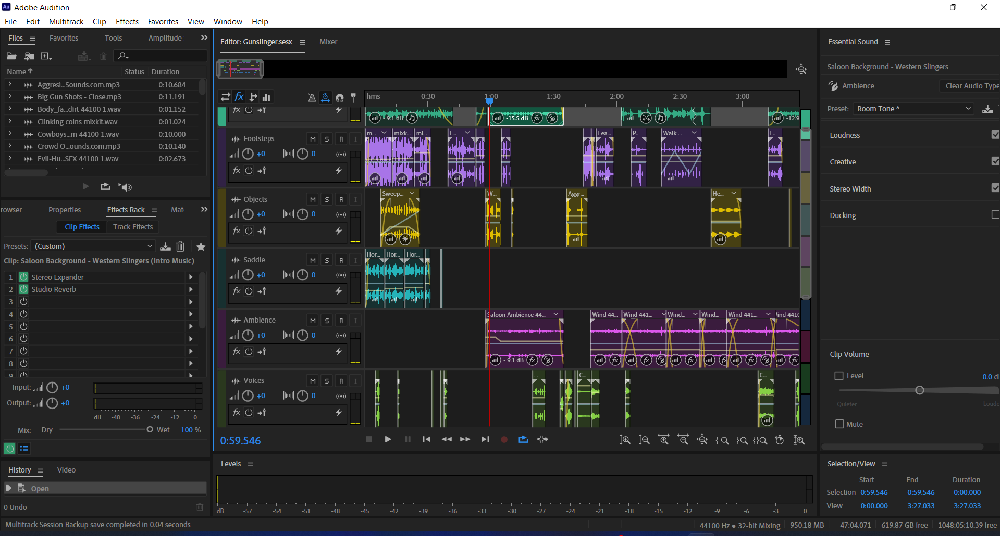

Audio Story
Created a sound story by mixing multiple audio files in Adobe Audition.
Project Brief
Create an multichannel mix using suitable audios that tells a story without use of words.
Mini-Story
The Lone Wanderer is currently set on a long journey to Goodsprings. Its been a while since he has taken a stop somewhere, so he decides to stop by in the nearby village to quench his thirst. While he was spending some time in the saloon, the remote village is attacked by ‘Gunner Colton’ - a troublemaker who has been exploiting the helpless people of this village since few months. The wanderer decides to put a stop to this by taking him out in a fair duel. He is paid by the folks of village for this service, as he rides away on his stallion back to the route he was on.
Editing Process
- Adobe Audition was used to create a mixtrack session, where the sample rate was kept at 44100Hz.
- Normalising of each audio clip was done to -0.1dB
- Subtle fade in and out at very beginning on horse’s galloping, saddle and many more audio clips. Additionally, stretch was used to convert fast walking into a version where horse seems as if its walking at a slower pace.
- Pan from left to right on the sweeping action of a person. Additionally when drink is passed to the character in the saloon.
- Used Essential sound settings to assign tags, reverb and match the loudness of audio clips.
- Background music during the duel was cut short using ‘Remix’.
- Gun shot was modified to get the right echoing feel, using delay’s rich double preset and the reverb effect. Amplification was done to boost the audio.
- Noise reduction was done for several audio clips
- Tweaks in fade in/fade out, crossfading was done in the end and later exported to mp3 format.
Audio Story
“All the audio files used in this mixtrack session are copyright/royalty free.”
Reflection
Some of my learnings through this project:
- How to write my own sound story
- Normalising of audio clips
- Creation of mixtrack session using several audio clips
- Capturing noise print and sound removal
- Applying pan and cross-fading on audio clips
- Usage of Essential sound panel
- Changing the span of soundtrack by using Remix settings
- Editing audio clips for creating background and ambience music